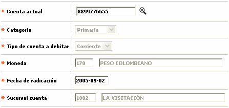

Novedad cambio categoría cuenta
Mediante esta opción que se invoca desde Generación de novedades débito se registra la novedad mediante la cual se hace el cambio de la categoría de una cuenta de principal a secundaria y viceversa.
El sitema valida que para poder hacer el cambio de categoría, la tarjeta tenga asociadas por lo menos dos cuentas de las cuales una es principal y otra secundaria. Adicionalmente el sistema siempre valida que solo una cuenta pueda ser principal y todas las demás que se encuentren asociadas con la tarjeta sean secundarias.

Descripción de campos
Cuenta actual |
Campo obligatorio con lista de valores de la que se selecciona la cuenta secundaria a la que se desea cambiar de categoría a principal. |
Categoría |
En este campo de salida se muestra como categoría 'Principal' para indicar que es la categoría que se le va a asignar a la cuenta seleccionada. |
Tipo cuenta a debitar |
Campo de salida que muestra si la cuenta seleccionada para cambio de categoría es de Ahorros, Corriente o Rotativo. |
Moneda |
En este campo de salida se muestra la moneda en la que se encuentra denominada la cuenta a la que se va a cambiar la categoría. |
Fecha radicación |
En este campo obligatorio se registra en formato YYYY-MM-DD la fecha en la que se ingresa la novedad en el sistema. |
Sucursal cuenta |
Campo de salida que muetra la sucursal de la entidad a la que pertence la cuenta seleccionada para el cambio de categoría. |